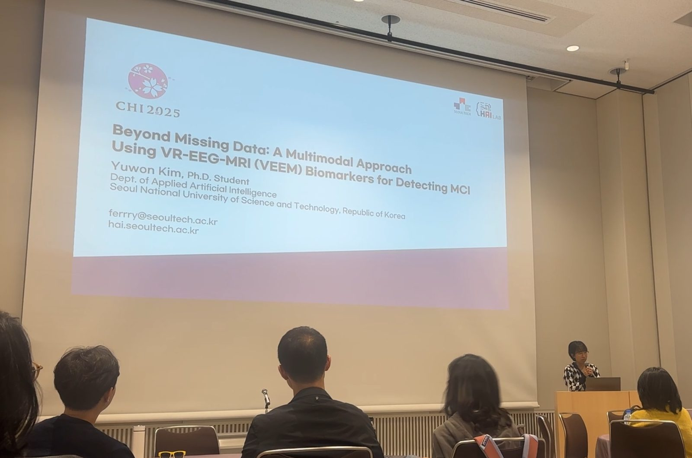
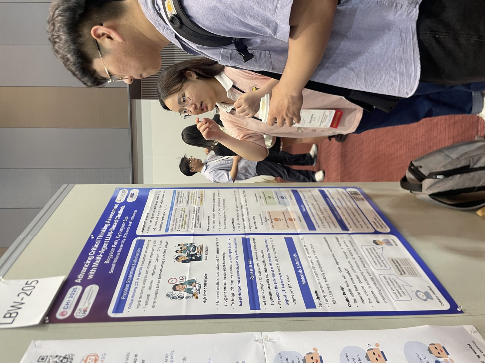
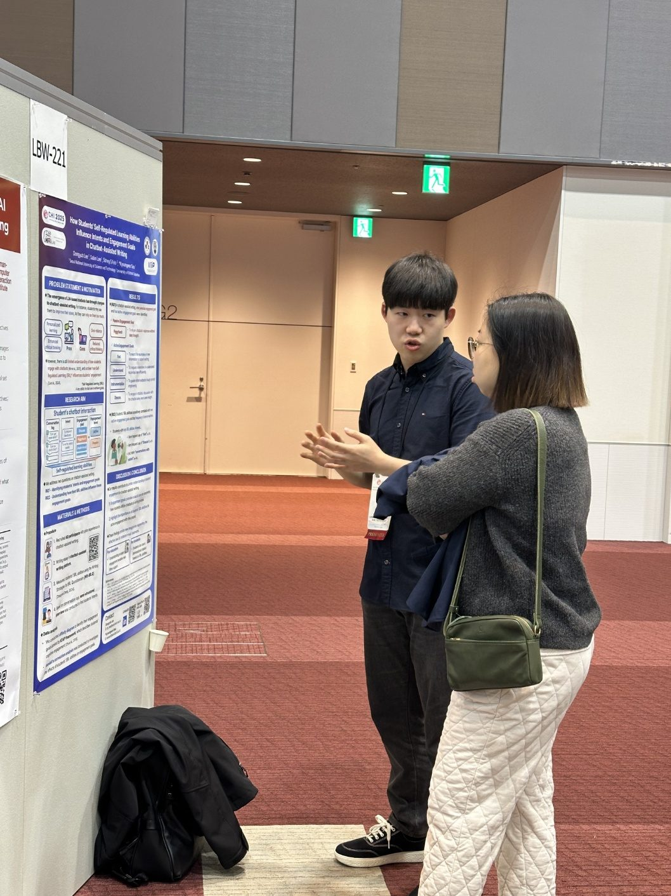
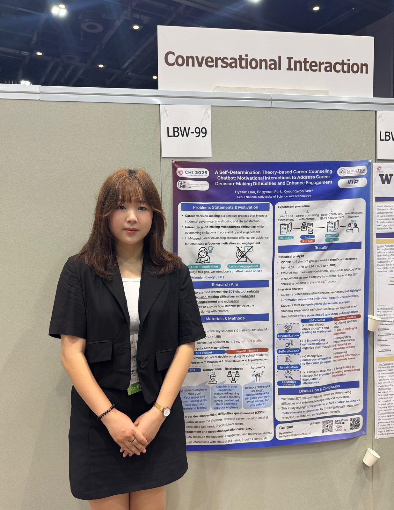
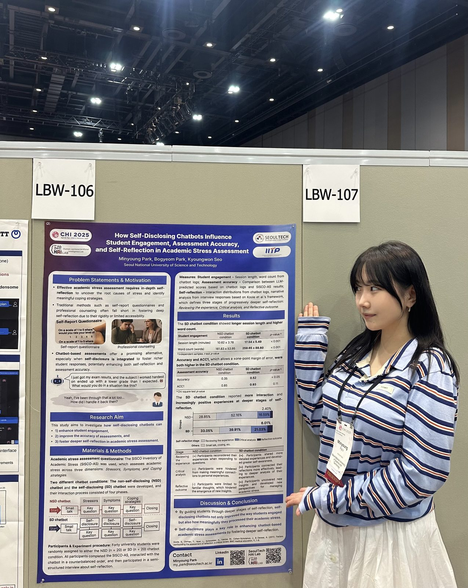
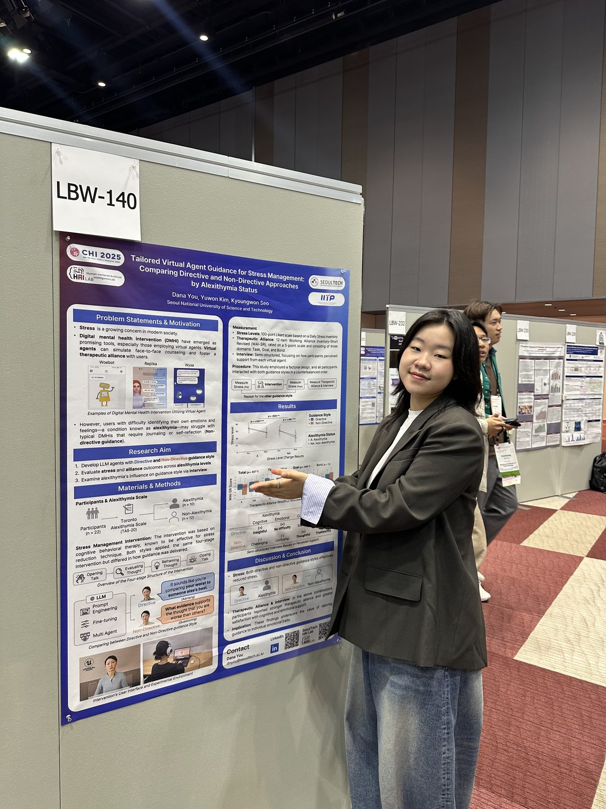
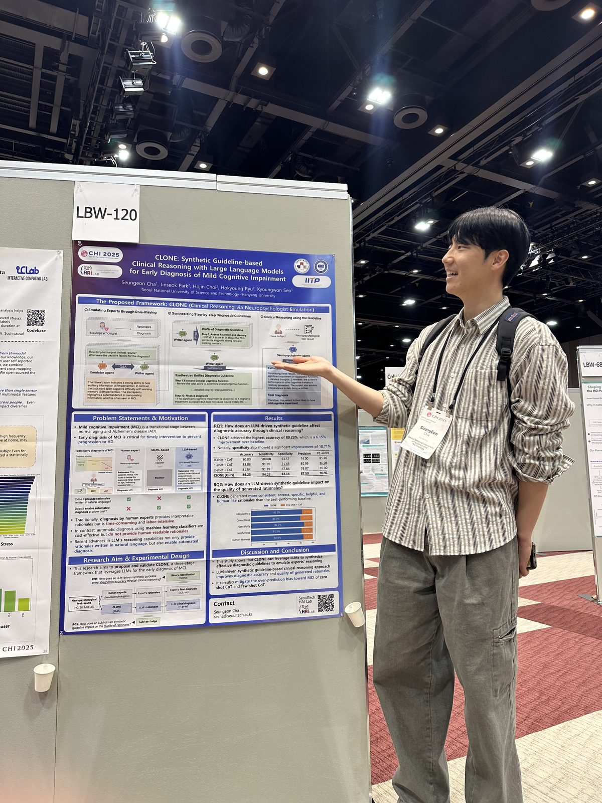

Seven Papers Have Been Presented at CHI 2025







국립 서울과학기술대학교 인간중심 인공지능 연구실 (HAI Lab) 김유원 석박통합과정, 박보겸 석박통합과정, 이동엽 박사과정, 한혜림 석사과정, 박민영 학석사연계과정, 유다나 학석사연계과정, 차승언 학석사연계과정(위에서 부터 순서대로)이 CHI 2025 학회에서 아래 주제로 구두 발표 및 포스터 발표를 진행하였습니다.
Yuwon Kim (Integrated Ph.D. student), Bogyeom Park (Integrated Ph.D. student), Dongyub Lee (Ph.D. student), Hyerim Han (M.S. student), Minyoung Park (Integrated M.S. student), Dana You (Integrated M.S. student), Seung Eon Cha (Integrated M.S. student) had presented their papers accepted at CHI 2025 conference.
[Student Research Competition (SRC)]
- Beyond Missing Data: A Multimodal Approach Using VR-EEG-MRI (VEEM) Biomarkers for Detecting MCI (Yuwon Kim)
[Late Breaking Work (LBW)]
- Assessing Critical Thinking through a Multi-Agent LLM-Based Debate Chatbot (Bogyeom Park)
- How Students' Self-Regulated Learning Abilities Influence Intents and Engagement Goals in Chatbot-Assisted Writing (Dongyub Lee)
- A Self-Determination Theory-based Career Counseling Chatbot: Motivational Interactions to Address Career Decision-Making Difficulties and Enhance Engagement (Hyerim Han)
- How Self-Disclosing Chatbots Influence Student Engagement, Assessment Accuracy, and Self-Reflection in Academic Stress Assessment (Minyoung Park)
- Tailored Virtual Agent Guidance for Stress Management: Comparing Directive and Non-Directive Approaches by Alexithymia Status (Dana You)
- CLONE: Synthetic Guideline-based Clinical Reasoning with Large Language Models for Early Diagnosis of Mild Cognitive Impairment (Seung Eon Cha)